Featured course hub
Year 7–10 Timber
Open the combined Stage 4 and Stage 5 subject website to find the project sequence, current guided sites, assessment support and verified course resources.
Industrial Arts learning
Open your course, follow the project pathway and build practical skills through timber, metalwork, engineering, construction and manufacturing.
Start here
Move from Year 9 foundation projects into more complex Year 10 work, with course resources and assessment support in one place.
Open the combined Stage 4 and Stage 5 subject website to find the project sequence, current guided sites, assessment support and verified course resources.
Timber project pathways
Choose the timber project you are currently completing. Each guided site opens in a new tab.
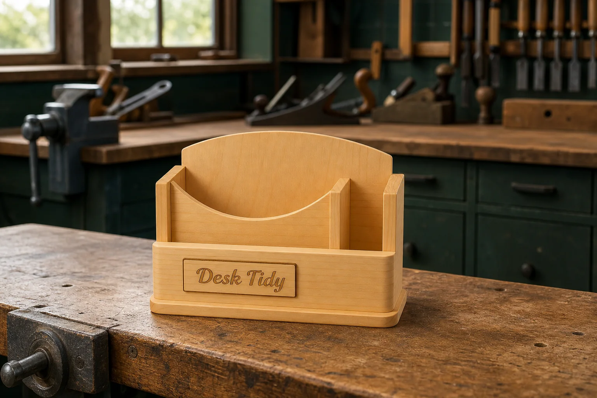
Open the Desk Tidy project learning site.
Open project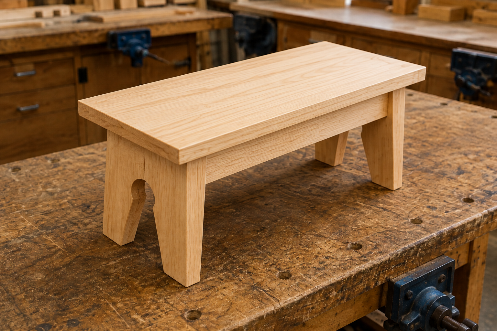
Build foundational timber, drawing, design and evaluation skills through the Footstool project.
Open guided course
Investigate, design and document a timber-and-acrylic programmable light.
Open guided course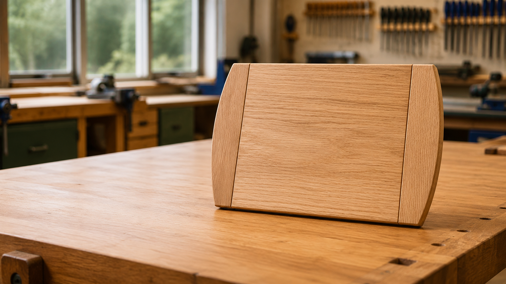
Build core workshop skills through the guided Breadboard course.
Open guided course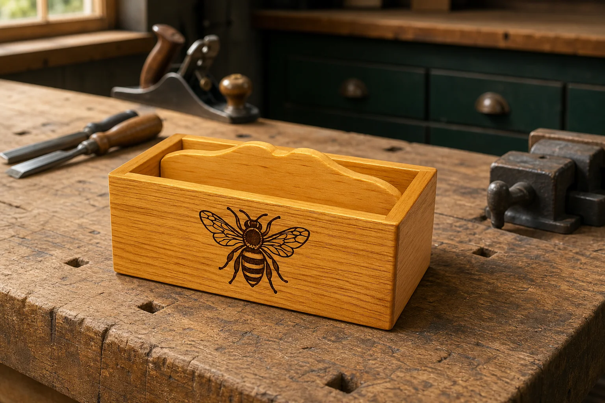
Develop accurate marking, joining and finishing through a compact timber project.
Open guided course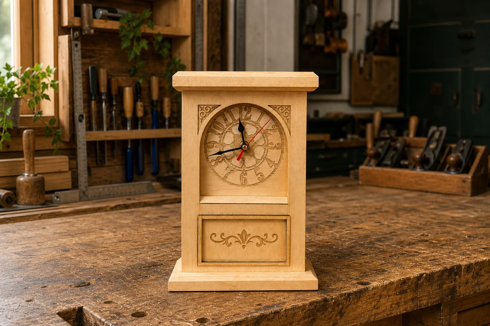
Follow the Clock project from planning and construction through to evaluation.
Open guided course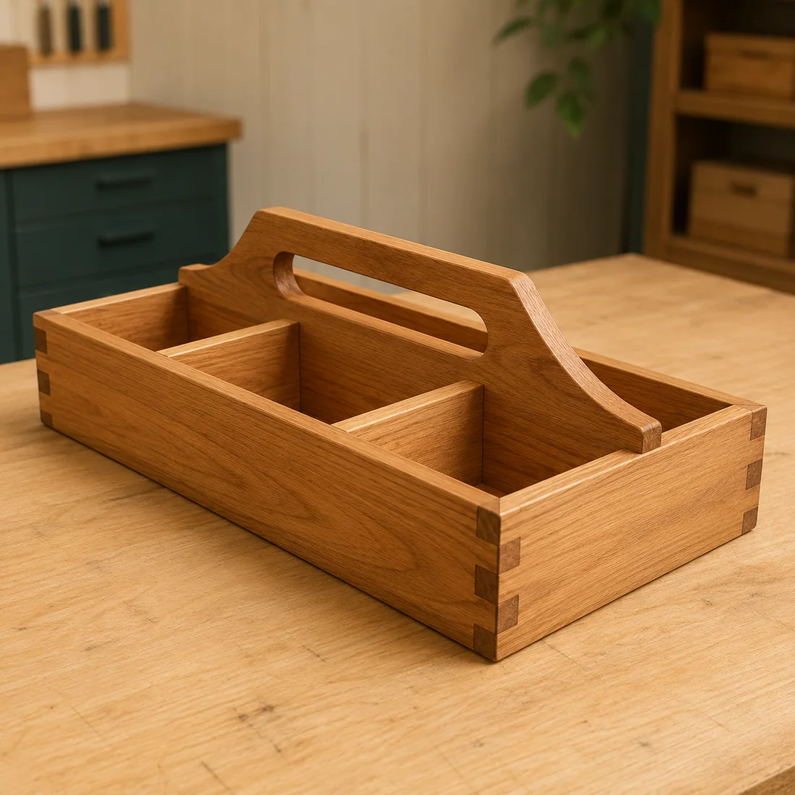
Open the guided course for the timber Tool Carry-all project.
Open guided course
Open the guided learning site for the timber Pen project.
Open project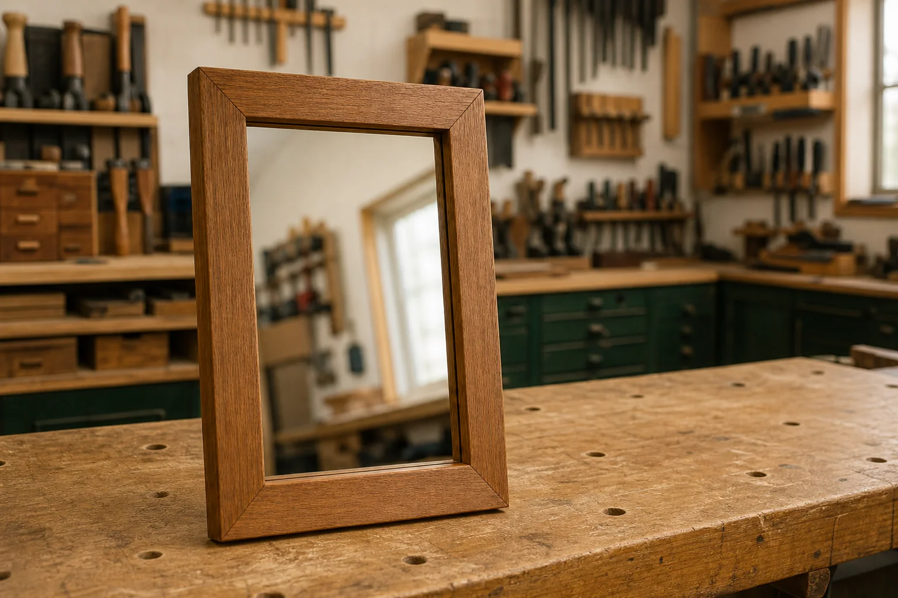
Develop precision, planning and evidence through the Year 10 Mirror course.
Open guided course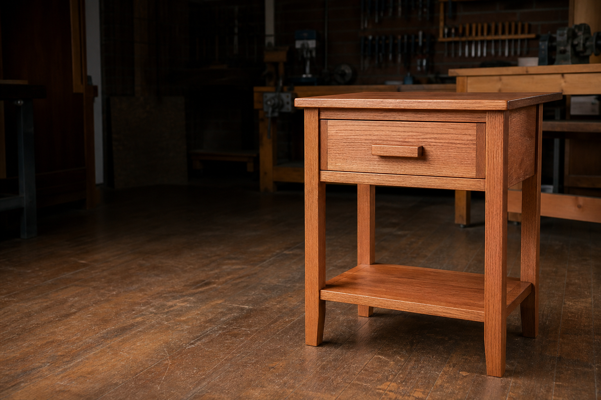
Open the complete guided pathway for the Bedside Table project.
Open guided course
Explore the developing alternative project pathway for the Folding Chair.
Open guided courseMetalwork pathways
Build safe, accurate metalworking skills through the Year 8, Year 9 and Year 10 course pathways.
Explore the combined Stage 4 and Stage 5 subject website, building safe foundation skills before progressing into more accurate fabrication, planning and assessment work.
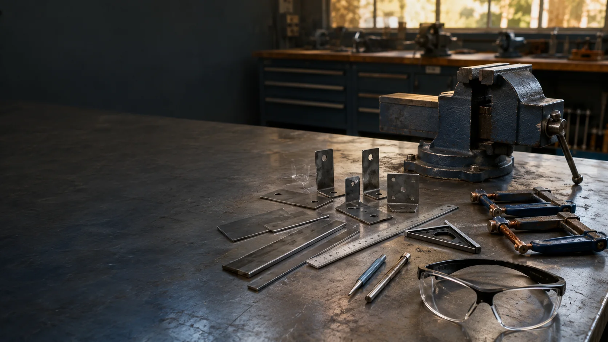
Build safe foundation skills through the upgraded Year 8 Metalwork site.
Open course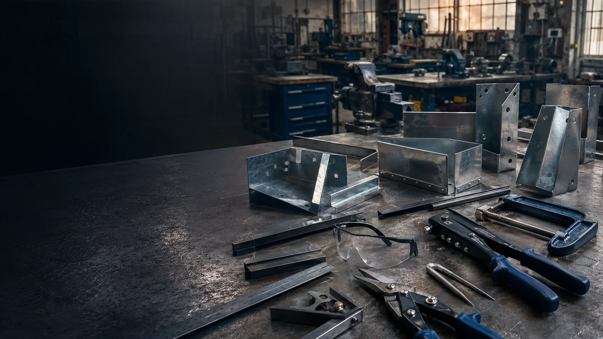
Continue into the upgraded Year 9 Metalwork course and project pathway.
Open course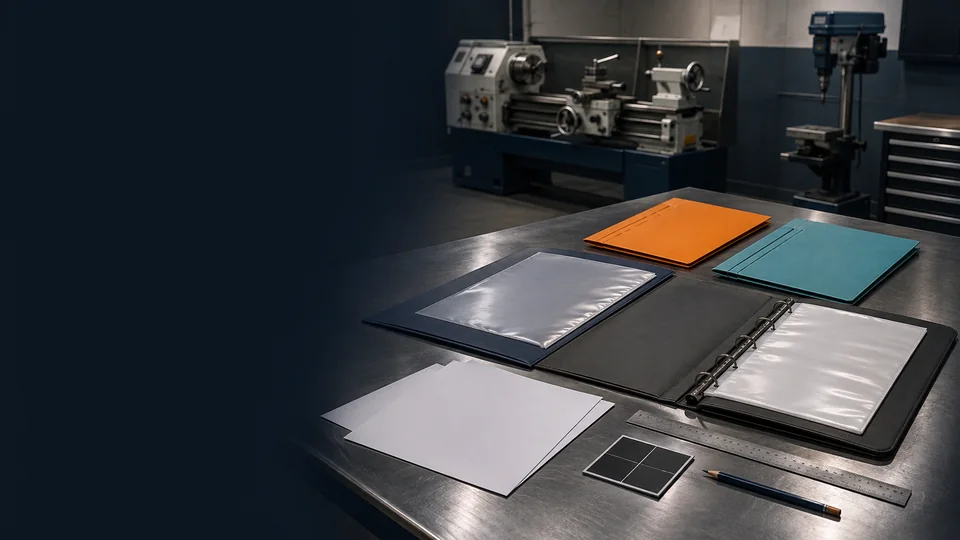
Advance into fabrication, machining and progressive project evidence through the Year 10 guided course.
Open courseEngineering learning
Open the dedicated engineering learning and project resource pathway.
Open the Engineering course website for learning materials, practical projects and course resources.
Food and agricultural practices
Open The Riv Burger Technology Mandatory unit or the Year 8, Year 9 and Year 10 agriculture courses.
Explore food production, plants, animals and sustainable farming through the course that matches your year level.

Design a signature burger using local produce and school-grown herbs, with safe practical work and an autosaving evidence folio.
Open guided course
Open the complete guided course, student learning checks and autosaving evidence folio.
Open guided course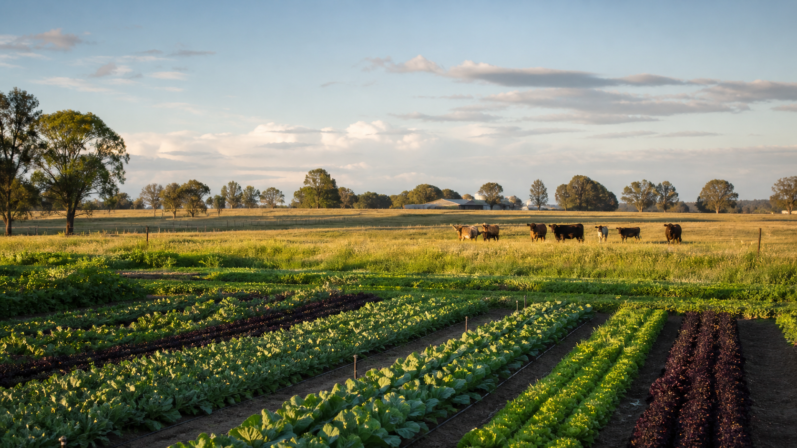
Explore the guided course, Busy Work, YouTube learning, assessments and autosaving evidence folio.
Open guided course
Open the guided course, Busy Work, YouTube learning, assessments and autosaving evidence folio.
Open guided courseVocational education and training
Open the supplementary collections for additional Construction and Manufacturing learning and support.
Open practical learning and workshop support for the Construction and Manufacturing training pathways.
Science learning
Explore the complete Stage 4 guided course, including mapped outcomes and content, theory, knowledge checks, Busy Work and YouTube learning.
Open the source-mapped Year 8 Science course and its five-module learning pathway.